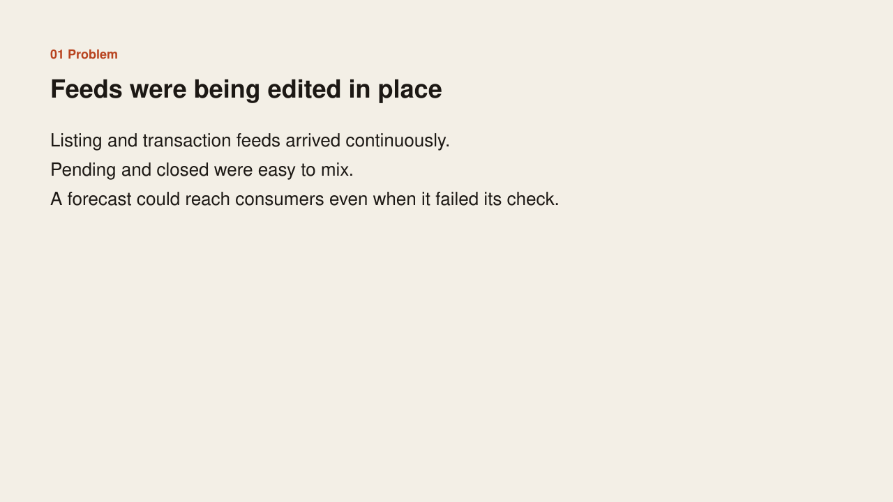
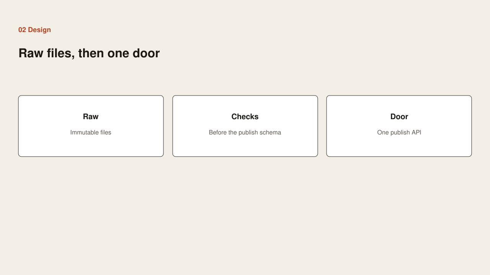
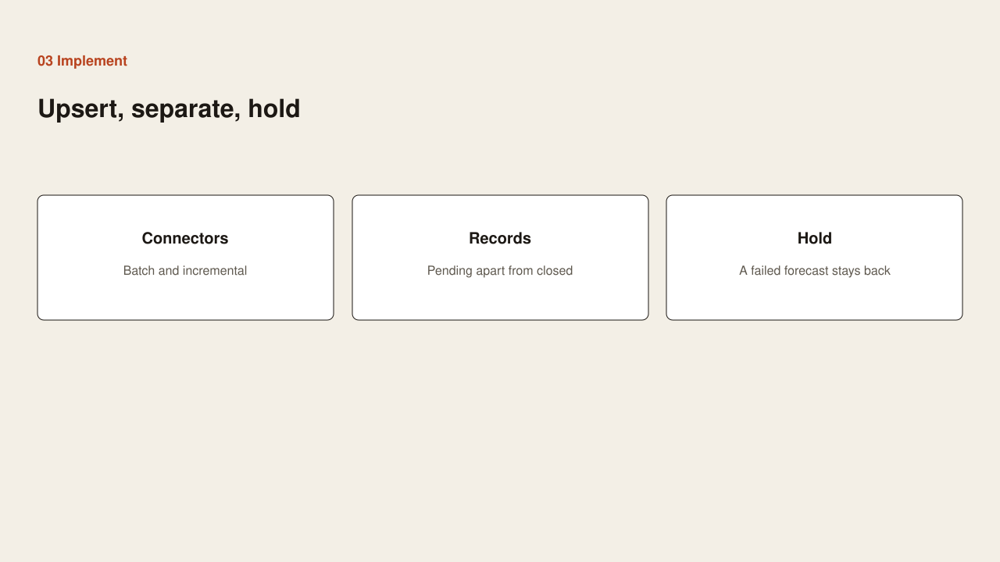
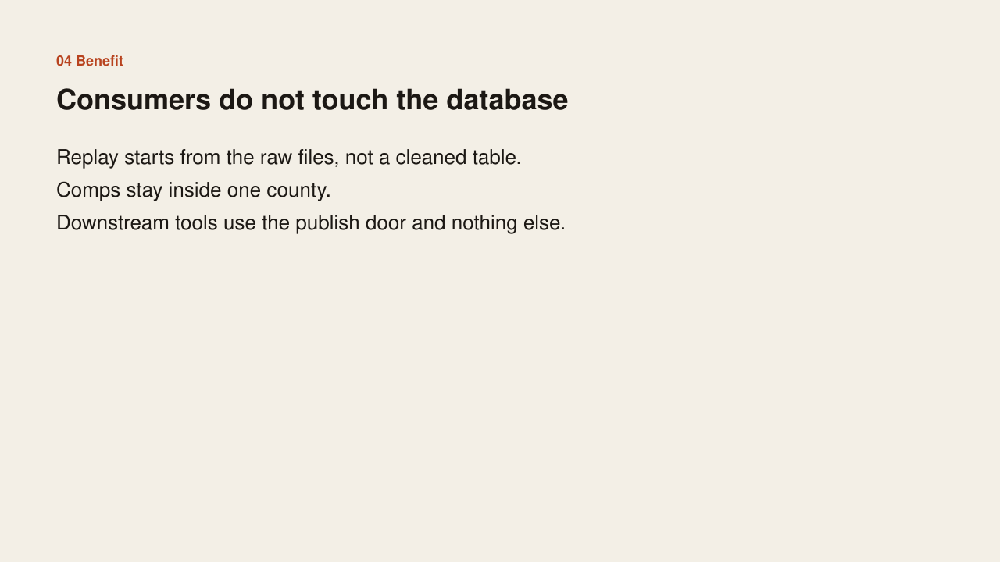

Problem
Problem

Listing and transaction feeds arrived continuously and were easy to edit in place. Pending and closed records were easy to mix. A forecast could reach consumers even when it failed its check.
Case study
Problem

Listing and transaction feeds arrived continuously and were easy to edit in place. Pending and closed records were easy to mix. A forecast could reach consumers even when it failed its check.
Design

Keep the raw files immutable. Run checks before anything reaches the publish schema. Give downstream tools one publish door and no database login.
Implementation

Connectors load in batch and incrementally, upserting on natural keys. Pending stays apart from closed. Comps stay inside one county. A forecast that fails its check is held.
Benefit

Replay starts from the raw files, not from a cleaned table. Consumers use the publish door and nothing else.